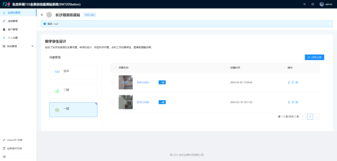

生态环境720全景自动监测站系统
一、登录页面
用户输入账号名密码登录此系统，点击短信验证码登录切换手机号短信验证登录。
二、监测站管理
监测站管理对各类监测站点（如环境质量监测站、污染源监测站、生态质量监测站）的数据进行有效组织管理，通过VR全景技术实现监测数据可图形化编辑、发布展示。
1、监测站查询
用户可以通过输入监测站名称或编号搜素监测站点。
点击高级筛选，用户可以通过监测状况、子站类型、监测因子、区划以及建站时间这些过滤条件筛选监测站点。
2、监测站展列方式
用户可以点击图文、列表或地图切换监测站展列方式。

3、监测站全景浏览
点击VR预览图标进入监测站VR全景浏览界面。
4、监测站全景图配置
点击配置图标进入监测站点全景图配置界面。

左侧可选中不同场景上传场景下的全景图，点击打开上传按钮弹出上传窗口，选择文件到此处进行全景图上传，点击提交提示操作成功则上传完成。

点击编辑图标右侧弹出全景场景编辑界面，可以修改全景场景名称、场景位置、封面图片、全景图片以及描述。
点击删除图标可以删除对应全景场景。
点击配置图标进入全景配置工具系统。
三、全景配置工具
1、热点
用户可以自由滑动中间区域浏览全景图。
用户可以点击图标管理按钮弹出图标管理窗口。
切换不同图标类型，点击上传图标按钮可以上传不同类型图标。
详细操作视频：
2、视角
滑动中间全景区域部分调整到合适视角，点击保存当前初始视角按钮，提示保存成功则保存完成了当前全景的进入初始视角。
右侧面板可以调整当前全景场景的左右、上下、远近观测范围。
3、全局
Logo可选择自定义上传，上传图片成功后左上角会替换成图片logo；站房介绍填写完成后保存即可。
4、导览
输入导览名称，切换导览方式到自定义模式；选中热点，右侧面板会弹出新增看点，可调整该看点的远近距离，保存即添加好一个看点；如需删除则选中下面导览看点，点击右侧删除按钮即可删除。选中下面导览看点，再次点击可定位到该导览看点在全景中的位置。
点击播放按钮可预览导览效果。
拖拽下面导览看点可调整位置，停留时间以及持续时间。
下图表示：停留3秒后飞行4秒到达热点位置。
点击保存按钮即可保存成一个导览。
左侧导览线路图的导览可拖拽排序调整位置，最后会按照从上到下依次导览。